Quantum Graphene Tutorial
Welcome to the Quantum Graphene tutorial. Here you will learn how to use the application step by step.
This section of the GUI covers the main screens' functionality, such as New Calculation and Project.
Getting Started
To get started, you can create a new calculation or open an existing project from the main menu.
In the start menu, you can select the most recently opened or used project, which will open with the previously selected parameters.
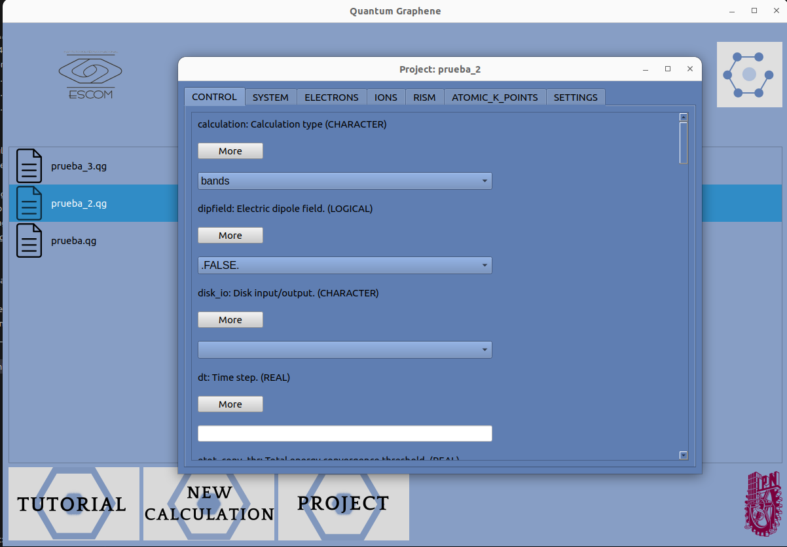Create a New Calculation
Click "NEW CALCULATION" to start a new calculation. You will be prompted to enter the necessary parameters.
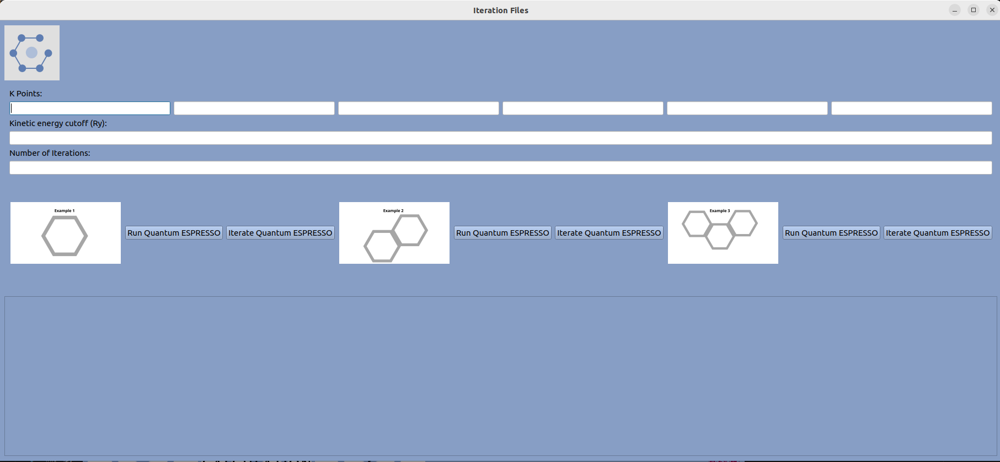In this section, there are three graphene schemes that can be used to perform the calculations needed. Clicking on one of the examples will display its .in file.
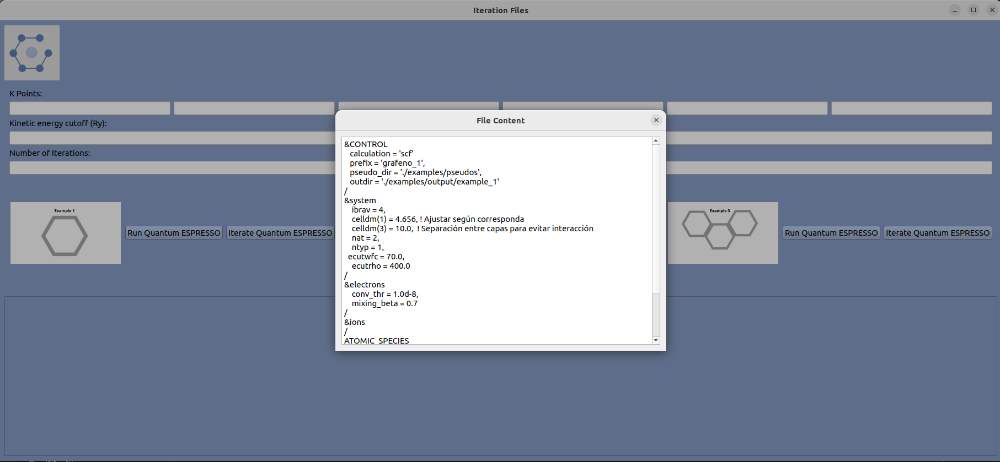K Points, Cut-off Energy, and Iterations
The user can add K points to any example, as well as the cut-off energy and the number of iterations.
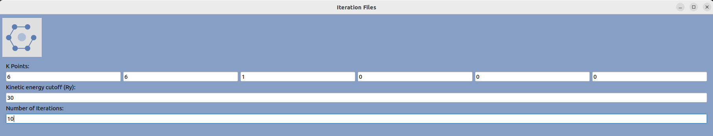NOTE: If you try to run one of the examples without filling in the K points, cut-off energy, or iterations fields, a message will appear asking the user to fill in those fields.
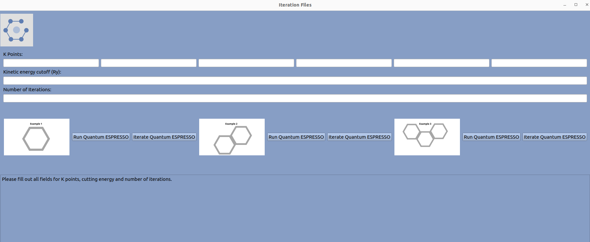With this information loaded, you can start Quantum ESPRESSO for any of the selected examples.
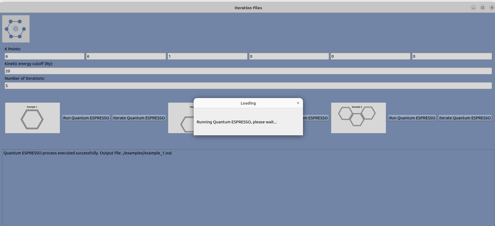Once the output file (.out) of the example has been created, you can start iterating the examples. At the end of the iteration, you will observe the plot of cut-off energy vs. the total energy of the system.
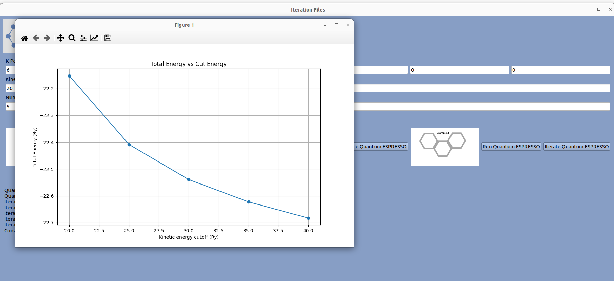Open a Project
Click "PROJECT" to open a saved project. Select the project file you want to load.
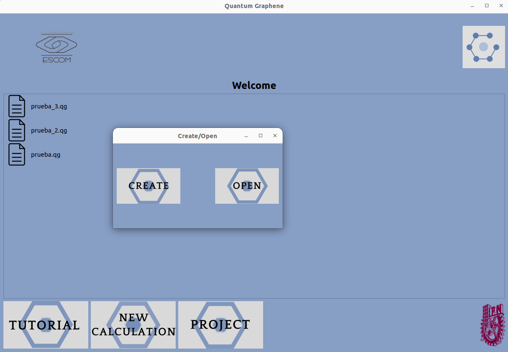Before opening the project window, a tab will appear with two options: "CREATE" to create a new project and "OPEN" to open an existing project. It is worth mentioning that the GUI generates a .qg file that is specific to this project.
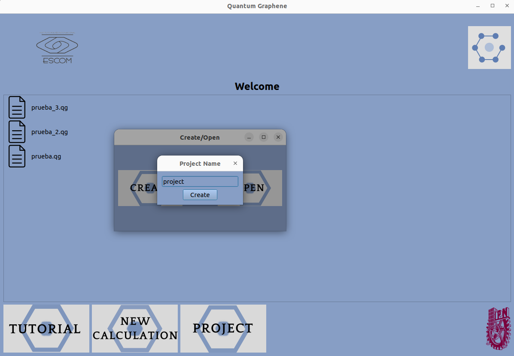When creating the project, the user can choose where to save it; it can be in any folder.
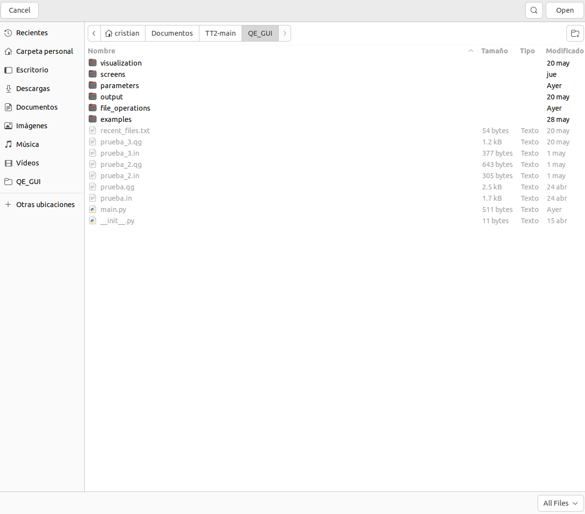Once the folder where the project was uploaded is selected, the parameter screen will appear where the user can fill them in.
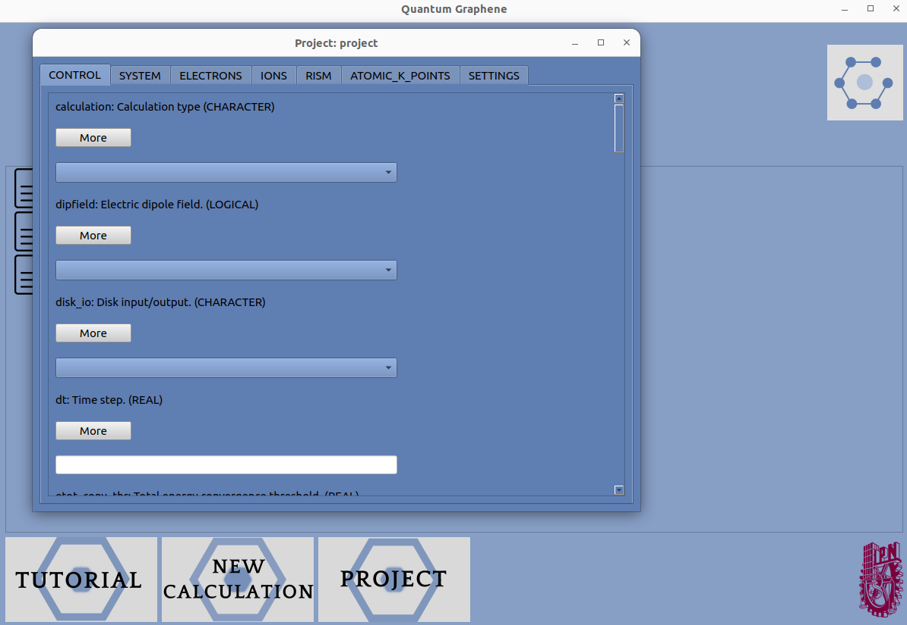NOTE: Some parameters are lighter in color than others. In those cases, if not filled in, Quantum ESPRESSO will not load.
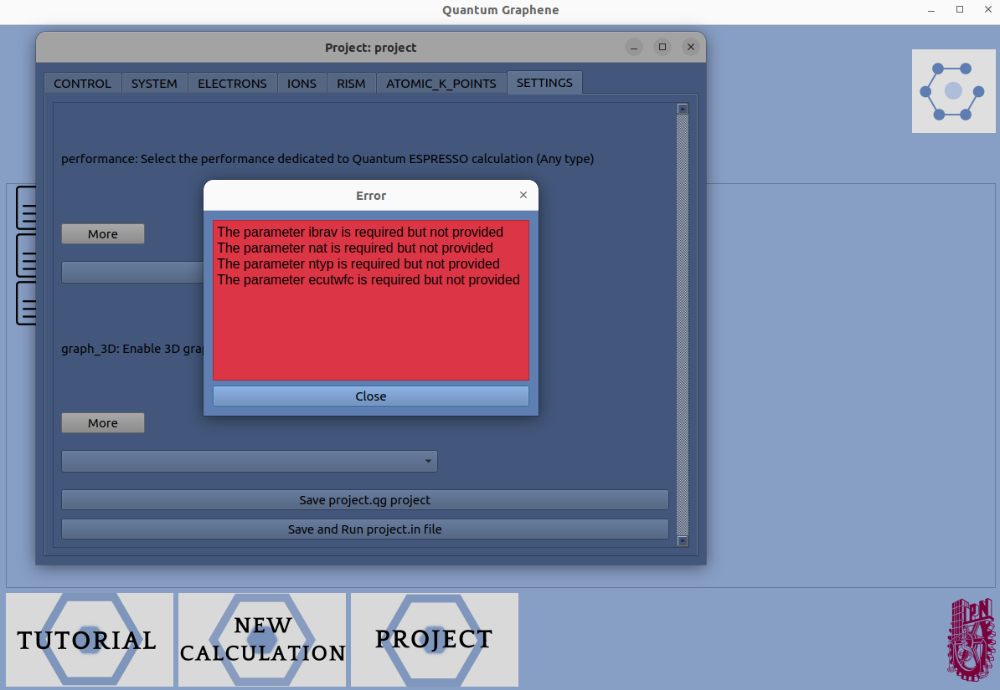The parameters that the user fills out are divided into 7 tabs. Each parameter has a brief description of what it does. Additionally, if you want to know more about a parameter, you can get information with the "more" button.
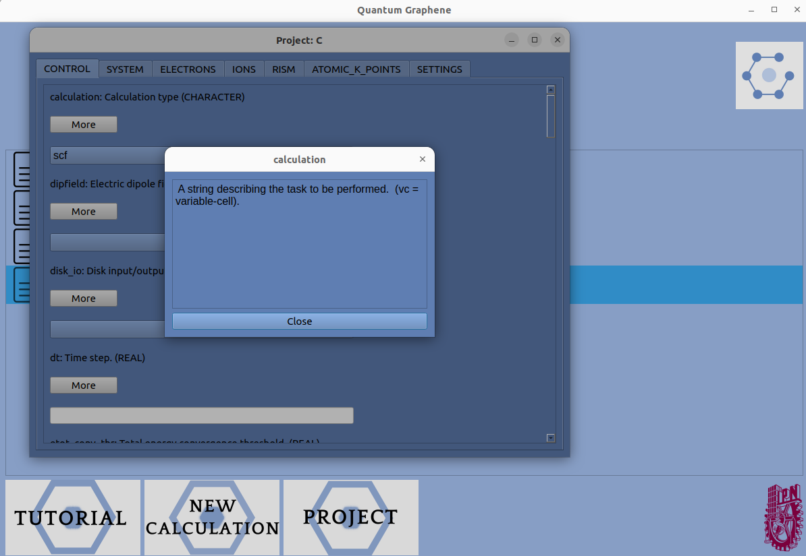After filling in all the necessary parameters, the project can be saved with all its loaded parameters. If the program is closed, the data will be saved in the last parameter where the user stopped adding.
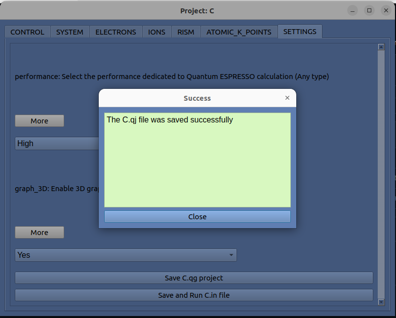With the file saved, the program can execute Quantum ESPRESSO to process the file.
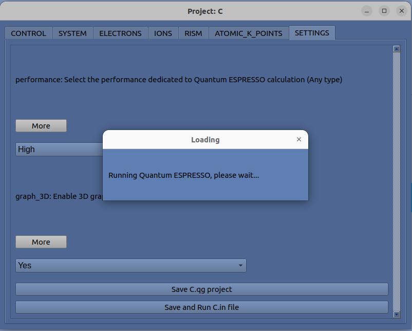When Quantum ESPRESSO is executed, 3 files are generated: input file, output file, and the xyz file.
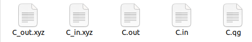With this visualized, the program shows the graphs of the .in and .out files to compare the molecule schematics.

Finally, the user can view the file they want in case they need to change or modify something else.
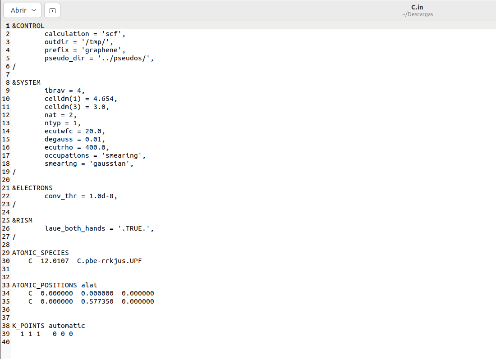More Information
For more details on using the application, refer to the official documentation or contact technical support.